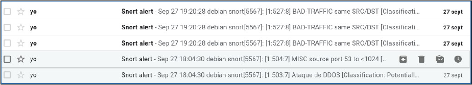

¿Por qué Snort?
¿Por qué Snort?
Esta herramienta se caracteriza por la creación de reglas específicas para encontrar todo tipo de anomalías en nuestro sistema. Si bien se trata de un sistema bastante complejo, su nivel de personalización es muy alta, y suele incluir una lista de reglas ya predefinidas, cuyos patrones podemos adaptar a nuestras necesidades. Además, SNORT nos permite controlar en tiempo real y a través de la terminal todos los paquetes que entran y salen de nuestro servidor, y está soportado por una gran variedad de sistemas operativos, como Debian, Fedora, Centos y Windows.
 Configuración previa
Configuración previa
En primer lugar, instalamos SNORT desde los repositorios:
apt install snort
Hecho esto, accedemos como administrador al fichero de configuración de la herramienta (/etc/snort/snort.conf) para establecer los parámetros necesarios. En el paso 1, donde pone ipvar HOME_NET any es donde especificamos nuestra red, la que analizaremos con esta herramienta en busca de anomalías (por ejemplo, 192.168.1.0/24).
Si acabamos cambiando ese “any” por una dirección de red, más abajo podemos comentar la línea ipvar EXTERNAL_NET any y descomentar la de abajo, como se ve en la imagen. De esta manera, identificamos como red externa todo lo que no pertenezca a la nuestra.
Más abajo veremos la ruta (/etc/snort/rules) en la que se encuentran guardadas todas las reglas disponibles en esta herramienta, así como una lista de reglas que podremos incluir con solo descomentarlas.
Una vez finalizada la configuración de nuestra herramienta, podemos ejecutar el comando snort -T -c /etc/snort/snort.conf -i [interfaz] (como root) para validar el archivo y comprobar que no haya errores.
¡Ningún error! Sigamos adelante.
Sintaxis de una regla SNORT
Al acceder a una de estas rutas (por ejemplo, a la de denegación de servicio distribuido, cuya ruta sería /etc/snort/rules/ddos.rules), vemos la sintaxis de estas reglas:
Cada regla de SNORT tiene la siguiente sintaxis:
acción protocolo red-origen puerto-origen -> red-destino puerto-destino (opciones)
El encabezado de la regla indica la acción que debe llevarse a cabo en caso de que se cumpla la regla. El que aparece en la imagen, alert, genera una alerta y registra el paquete, pero también podríamos elegir otras acciones:
- log: simplemente registra el paquete.
- pass: ignora el paquete.
- activate: activa una alerta y pone en marcha otra regla.
- dynamic: queda inactiva hasta que la activa otra regla, en cuyo caso actúa como un log.
- drop: bloquea el paquete y lo registra.
- reject: bloquea el paquete, lo registra y manda un paquete RST si el paquete es un TCP, o un mensaje de puerto inalcanzable ICMP si es un paquete UDP.
- sdrop: bloquea el paquete sin registrarlo.
El protocolo puede ser TCP, UDP, IP o ICMP. Las IP y los puertos de origen y destino pueden reemplazarse por any cuando queramos referirnos a todas las IP o a todos los puertos. En las direcciones IP, podemos introducir una lista entre corchetes (p. ej., alert icmp any any →
[192.168.1.108/24,172.22.0.200/24] any), mientras que para introducir un rango de puertos usamos los dos puntos (1:1024). También podemos descartar direcciones y puertos, escribiendo un signo de interrogación al principio de la misma (!192.168.1.108/24).
Por último, las opciones se dividen en cuatro categorías:
- general: ofrecen información sobre la regla en sí.
- payload: sobre los datos transmitidos en el mensaje.
- non-payload: no hacen referencia a los datos del mensajes, pero igualmente se tienen en cuenta en la detección.
- post-detection: cuando se ha detectado la amenaza.
 Creación de reglas específicas
Creación de reglas específicas
Para añadir nuestras propias reglas personalizadas en SNORT, nos dirigiremos al fichero /etc/snort/rules/local.rules, que editaremos como root. Ahí añadiremos las reglas que necesitemos siguiendo la sintaxis mencionada en la anterior sección. Veamos un ejemplo de ello:
He añadido una regla que envíe un mensaje de alerta cada vez que capture paquetes ICMP provenientes de cualquier dirección y puerto, y que vayan dirigidos a la IP de mi equipo a través de cualquier puerto. La opción sid (obligatoria) es el número identificador de la regla, que debe ser único. Esta alerta saltará, por ejemplo, cada vez que se le haga un ping a la máquina donde se esté ejecutando SNORT:
Para poner en marcha las reglas que hemos creado, ejecutamos el comando que vemos en la imagen (que se explica en la siguiente sección) y hacemos ping desde una máquina remota a donde tenemos la herramienta. En las alertas, veremos el día y hora de la alerta, el mensaje que hayamos escrito en la regla, la prioridad, el protocolo y las direcciones IP de origen y de destino.
Funcionamiento básico
Para empezar a utilizar la herramienta, podemos ejecutar como root el comando snort -v -i [interfaz], para capturar los paquetes que están pasando por nuestra interfaz. Si realizo un ping desde una máquina remota, SNORT mostrará información sobre dichos paquetes, y al interrumpir el comando, veremos un informe general de la actividad registrada por la herramienta:
Otra forma de controlar la actividad que se produce en nuestra red es a través del siguiente comando:
sudo snort -A console -q -u snort -g snort -c /etc/snort/snort.conf -i [interfaz]
- Con -A seleccionamos el modo de alerta que prefiramos:
- console permite mostrar las alertas por pantalla.
- fast devuelve información general sobre los paquetes (tiempo, mensaje de la alerta, clasificación, prioridad de la alerta, IP y puerto de origen y de destino).
- full nos devuelve muchos más detalles además de lo anterior dicho.
- unsock envía las alertas a través de un socket para que las escuche otra aplicación.
- none desactiva las alarmas.
- El parámetro -q se usa para que no se muestre la información del banner y de la inicialización.
- Parámetro -u: para especificar el usuario.
- Parámetro -g: para especificar el grupo.
- Con -c usamos las reglas del fichero que incluyamos a continuación.
- Con -i elegimos la interfaz donde queremos ejecutar SNORT.
Si ejecutamos este comando y tratamos de hacer un ataque DOS (SYN Flood) desde una máquina remota, por defecto, se activarán las alertas correspondientes:
Otra opción sería dirigir las alertas a syslog en lugar de mostrarlas por pantalla. Para ello, abrimos el archivo de configuración de SNORT, y descomentamos la línea output alert_syslog: LOG_AUTH LOG_ALERT. Ahora ejecutamos el comando empleando el parámetro -s para recibir las alertas en el log.
sudo snort -s -q -c /etc/snort/snort.conf -i [interfaz]
 OJO CUIDAO
OJO CUIDAO
Las alertas se guardarán en el fichero /var/log/auth.log, no en /var/log/syslog.
No solo podemos dirigir las alertas a un fichero, sino también enviarlas a nuestro correo electrónico de Gmail (o de otro servidor de correo) de una forma automatizada. Para ello, necesitaremos usar Postfiz y swatch:
Postfix
Primero, actualizamos los repositorios del sistema e instalamos postfix e mailutils:
apt-get update && apt-get install postfix mailutils
Después, creamos el fichero /etc/postfix/sasl_passwd y añadimos la siguiente línea, con el servidor SMTP de Gmail, el puerto por la que escucha, nuestro correo y la contraseña:
[smtp.gmail.com]:587 usuario@gmail.com:contraseña
Con esto hacemos que la aplicación entre con nuestro correo y contraseña para, posteriormente, enviarnos un correo a nosotros mismos. Guardamos el archivo y le añadimos los servicios para que solo nosotros tengamos acceso a estos datos:
chmod 600 /etc/postfix/sasl_passwd
Ahora abrimos el archivo de configuración de Postfix:
nano /etc/postfix/main.cf
Y añadimos los siguientes valores:
relayhost = [smtp.gmail.com]:587
smtp_use_tls = yes
smtp_sasl_auth_enable = yes
smtp_sasl_security_options =
smtp_sasl_password_maps = hash:/etc/postfix/sasl_passwd
smtp_tls_CAfile = /etc/ssl/certs/ca-certificates.crt
Guardamos el fichero y lo cerramos. A continuación, usamos el comando postman para compilarlo (el resultado se guardará en el archivo sasl_passwd.db, en ese mismo directorio) y reiniciamos el servicio de postfix:
postmap /etc/postfix/sasl_passwd
service postfix restart
Por último, entramos en los ajustes de nuestra cuenta de correo electrónico, nos dirigimos a la pestaña “Seguridad” y bajamos hasta la sección de “Acceso de aplicaciones poco seguras”, en el cual habilitamos dicha opción.
Swatch
Instalamos swatch y creamos un fichero de configuración:
sudo apt install swatch
sudo nano /etc/swatchrc
Dentro del fichero de configuración, escribimos los patrones que tendrán las alertas que queremos recibir. Para recibir los mismos mensajes de alerta que hemos recibido antes, por ejemplo, podemos especificar en el archivo que envíe todas las alertas de prioridad 2:
watchfor /Priority\: 2/
mail addresses=larapruter@gmail.com:, subject="Snort alert",
throttle 30:00
Finalmente, ejecutamos swatch para que aplique la configuración que acabamos de añadir al fichero /var/log/auth.log, y le añadimos el parámetro --daemon para que funcione en segundo plano:
swatchdog -c /etc/swatchrc -t /var/log/auth.log --daemon
Ahora, si volvemos a realizar el ataque, recibiremos un correo electrónico por cada alerta que aparezca con esos patrones en el fichero auth.log:

Para terminar, os dejo por aquí bibliografía que me ha servido para documentarme.
Bibliografía
Alfon. (2008, 18 enero). Sistemas de Detección de intrusos y Snort. Maestros del Web. http://www.maestrosdelweb.com/snort/
Chandel, R. (2021, 11 febrero). How to Detect NMAP Scan Using Snort. Hacking Articles. https://www.hackingarticles.in/detect-nmap-scan-using-snort/
Delgado, D. O. (2021, 25 agosto). Qué es Snort: Primeros pasos. OpenWebinars.net. https://openwebinars.net/blog/que-es-snort/
Franco, M. (2017, 27 octubre). Snort: Aviso de alertas por correo. Manuel Franco. https://manuelfrancoblog.wordpress.com/2017/10/27/snort-aviso-de-alertas-por-correo/
Golden, N. (s. f.). Configure Postfix to use Gmail as a Mail Relay. HowtoForge. Recuperado 28 de septiembre de 2021, de https://www.howtoforge.com/tutorial/configure-postfix-to-use-gmail-as-a-mail-relay/